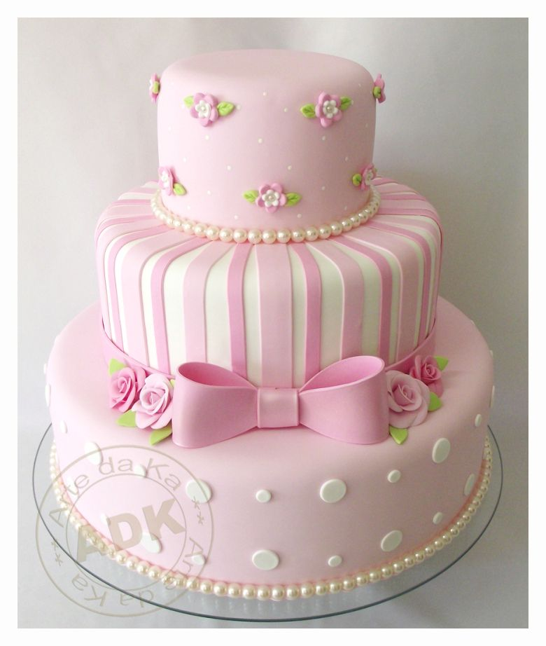

Receita de Bolo Infantil Rosa

Ingredientes
- 2 xícaras de farinha de trigo
- 1 e 1/2 xícaras de açúcar
- 1 xícara de leite
- 1/2 xícara de óleo
- 3 ovos
- 1 colher de sopa de fermento em pó
- Corante rosa alimentício
Modo de Preparo
- Preaqueça o forno a 180°C.
- Em uma tigela, misture a farinha e o fermento. Reserve.
- No liquidificador, bata os ovos, o açúcar, o óleo e o leite.
- Adicione a mistura do liquidificador aos ingredientes secos e mexa até obter uma massa homogênea.
- Adicione o corante rosa até atingir a cor desejada.
- Despeje a massa em uma forma untada e enfarinhada.
- Asse por cerca de 30-40 minutos ou até que um palito saia limpo.